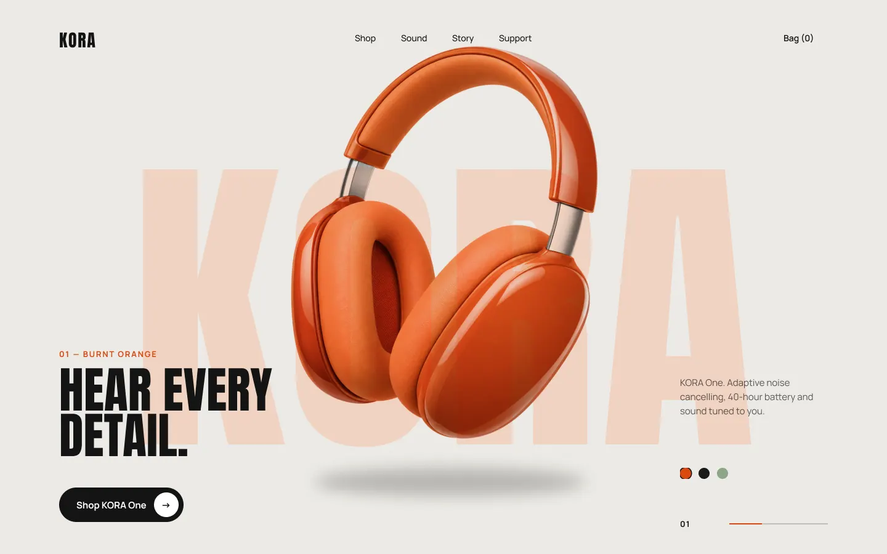
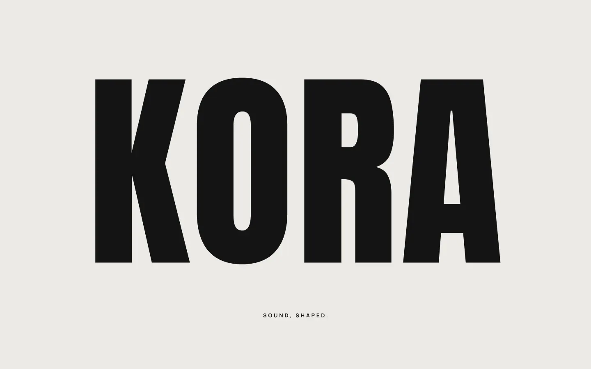
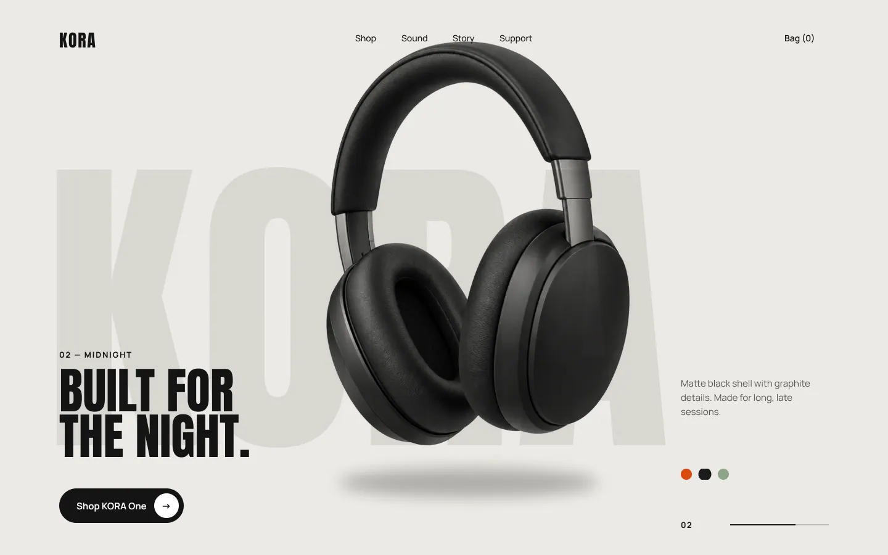
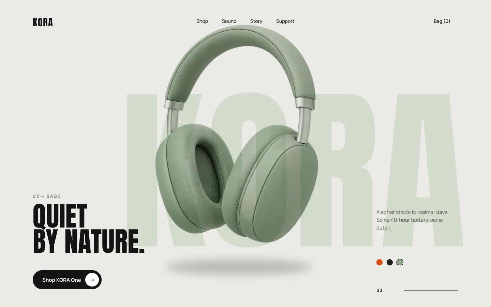
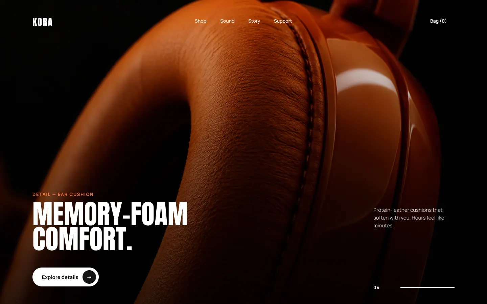
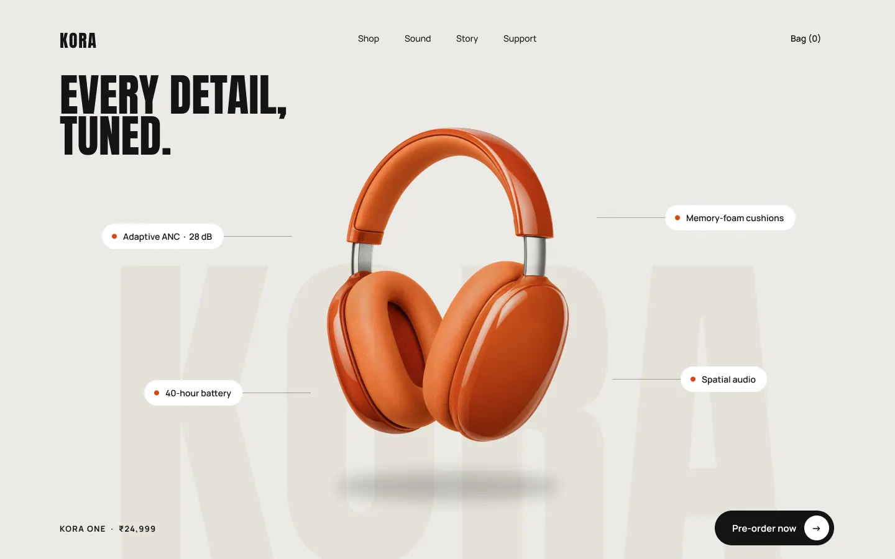

KORAAnimated product launch site
Hear every detail. - Animated product launch site UI/UX case study
A bold, typographic headphone launch site where each colourway brings its own mood.

01Overview
A bold, typographic headphone launch site where each colourway brings its own mood.
KORA is a concept launch site for premium headphones. I designed and animated six frames in Figma: an intro, three colourways, a macro close-up of the ear cushion and an annotated specs view.
02The challenge
What had to be solved
Headphones all look similar in photos. The site needed a memorable identity and a reason to look closer at the details.
Design goals
- Create a bold, recognisable typographic identity
- Give each colourway its own personality
- Zoom into the materials
- Keep specs readable
03Process
How I approached it
- Giant wordmarkKORA in huge type sits behind the product in every frame.
- Colour storiesOrange, black and sage each get a headline and a mood.
- Macro momentA full-screen close-up of the memory-foam cushion.
- Annotated specsCallouts point to drivers, battery and comfort features.
04Intro
A wordmark that owns the screen.
The animation opens on the KORA wordmark before the product arrives.

05Colourways
Hear every detail. Built for the night. Quiet by nature.
Each colourway has its own headline and background tint.


06Macro and specs
Memory-foam comfort, every detail tuned.
A macro shot of the cushion, then annotated specs.


07Decisions
Key design decisions
The giant wordmark creates depth and makes every frame instantly recognisable.
Each colourway is sold with its own short story rather than a colour picker alone.
Showing the material up close makes the specs that follow feel earned.
08Design system
Visual language
Warm off-white backgrounds, condensed black display type and a vivid orange accent.
TypeCondensed heavy display type
09Outcome
What was delivered
KORA gets a launch concept with a strong typographic identity and six frames that move from first impression to detailed specs.
If the project continues, next I would:
- Add a 360 product viewer
- Design the checkout
- Build with scroll-driven animation
Next project
Luxury KitchenPremium knives, sold in Arabic.View project